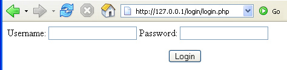

A PHP login page
This lesson is part of an ongoing User Authentication tutorial. The first part is here: User Authentication along with all the files you need.
The first script to take a look at in your login folder is login.php. Open up this script in a text editor, and well see how it works. Of course, you can fire up your server and try it out. What you'll see is a simple login page with textboxes for username and password, as well as a submit button. It will look like this:

The HTML for this form can be seen at the bottom of the login.php script that you have (hopefully) by now opened. There's nothing special about it. But notice that there's a PHP print statement in the HTML Body section:
<?PHP print $errorMessage;?>
This is for displaying error messages for the user.
The first few line of the script, though, just set up some variables:
$uname = "";
$pword = "";
$errorMessage = "";
$num_rows = 0;
The $errorMessage variable is an important one. We'll add something to this variable, if an error occurs. We'll then check to see if it's blank or not.
The next part of the code is just the SQL checking function you met earlier. This aims to prevent SQL injection attacks. After this code, we check to see if the form has been POSTED or not (was the Submit button clicked):
if ($_SERVER['REQUEST_METHOD'] == 'POST') {
}
Most of our code goes between the curly brackets of this if statement. The first thing to do is to get the username and password from the textboxes:
$uname = $_POST['username'];
$pword = $_POST['password'];
We then deal with any unwanted HTML (scripting attacks):
$uname = htmlspecialchars($uname);
$pword = htmlspecialchars($pword);
Next, we attempt to connect to the database:
$user_name = "root";
$pass_word = "";
$database = "login";
$server = "127.0.0.1";
$db_handle = mysql_connect($server, $user_name, $pass_word);
$db_found = mysql_select_db($database, $db_handle);
If the database was found, then the variable called $db_found will be true. We check for this in the next lines:
if ($db_found) {
}
else {
$errorMessage = "Error logging on";
}
If the database isn't found, then some text is added to the error message variable. If the database was found, strip the incoming text of any unwanted characters (SQL Injection attacks). These next two lines call the function at the top of the code:
$uname = quote_smart($uname, $db_handle);
$pword = quote_smart($pword, $db_handle);
With the username and password sanitised, we can then set up a SQL command. We're selecting all the records in the database where the incoming username and password match the database table fields called L1 and L2:
$SQL = "SELECT * FROM login WHERE L1 = $uname AND L2 = $pword";
Next, issue the SQL command using mysql_query( ):
$result = mysql_query($SQL);
We need to check what is returned by the mysql_query() function. The value
in $result will either be true (if any records are returned) or false
(if none are returned). We're checking to see if there were any errors when
the SQL command was issued against the database table. If so, put something
in the error message variable:
if ($result) {
}
else {
$errorMessage = "Error logging on";
}
If the SQL command was issued successfully, you can see how many rows were returned from the database table. The inbuilt function mysql_num_rows( ) is used for this. If no rows were returned, then that tells you that there's something wrong with either the username or password.
$num_rows = mysql_num_rows($result);
Next, we test the $num_rows variable to see if it's greater than zero. If it is, then you have a successful logon. If not, then it's invalid:
if ($num_rows > 0) {
$errorMessage= "logged on ";
}
else {
$errorMessage= "Invalid Logon";
}
In the above code, the number of rows returned could be greater than 1. That would mean that 2 or more people have the same username and password. If you have a website where each user has to be unique, then you obviously want to check if $num_rows = 1. For some websites, it doesn't really matter if 2 or more people have the same login details. But for things like forums, where people are posting and replying to the input of others, then it does matter. After all, you want to credit forum users with the correct posts. For the purpose of this tutorial, assume that it doesn't matter if login details are the same.
Setting a Session
So that a user can be remembered across different web pages, you can use something called a Session. A session is simply the time spent at a particular site or sites. You can store values with sessions, and these values will be available to all pages on the site. When you close your browser, the sessions will end. There are quite a lot of ways to use sessions, but we're only interested in saving a value so that it can be referred to across different pages.
In the previous code, the part that checked if the user was OK was this:
if ($num_rows > 0) {
$errorMessage= "logged on ";
}
else {
$errorMessage= "Invalid Logon";
}
The code checks to see if the number of rows returned from a SQL command is greater than zero. If it is, then the user is OK. But the code in the login.php script is slightly different. It's this:
if ($num_rows > 0) {
session_start();
$_SESSION['login'] = "1";
header ("Location: page1.php");
}
What the code does is to set up a session variable. The value in the variable will be 1, if the user logs on successfully. To set up a session variable, you need to issue the start command:
session_start( );
This starts a PHP session. To set up a session variable that you can use to store values, you use this:
$_SESSION[ ]
In between the square brackets of $_SESSION, you type the name of your variable. Like all variable names, you can call it almost anything you like. Storing values in the session variable is just the same as storing values in a normal variable:
$_SESSION['login'] = "1";
After the script runs, you'll have a session variable called 'login' that is set to a value of 1, if the user is OK. You can then use the "header" function to redirect the user to the page on your site for members, page1.php in the code above.
header ("Location: page1.php");
For the else part of the if statement, the code is this:
if ($num_rows > 0) {
session_start();
$_SESSION['login'] = "1";
header ("Location: page1.php");
}
else {
$errorMessage = "Invalid Login";
session_start();
$_SESSION['login'] = '';
}
Here, we add something to the error message variable:
$errorMessage = "Invalid Login";
Next, we issue the "start session" command:
session_start();
But the next line puts something different in to the session variable:
$_SESSION['login'] = '';
We're using the same session name (login), but this time we set it to a blank string. If the user tries to gain access to a restricted part of the site, we'll check for a blank string. A blank string means that the user hasn't logged on successfully, so we'll redirect them to the login page.
A note of caution here. If you switch cookies off in your browser, the script above refuses to work! This is because when you use session_start, PHP sends the browser something called a session ID. This is a long string of letters and numbers. PHP attempts to save the session ID as a cookie. But it only does this if a line in php.ini from your Apache server is set. This line:
session.use_cookies = 1
If you set this value to 0, then you should be able to log on whether cookies are set or not. The problem is, there's a good chance that you can't set this to zero. Especially if you have web hosting with someone else. The solution, in that case, is to check whether cookies are enabled or not.
You don't actually need PHP to check if cookies are enabled. You can use Javascript. Try this search string in Google:
javascript +cookies +enabled
You should then find plenty of ideas for scripts. Of course, you'd first need to check if Javascript is enabled!
And that's about it for the login script. Here's a run down on what we did:
- Got the username and password from textboxes on a form
- Opened a connection to a database
- Validated the username and password
- Checked to see if any rows were returned from the database
- If rows were returned, set a session variable to 1
- If no rows were returned, set a session variable to a blank string
- Built up an error message throughout the code
But the point about setting a session variable is so that you can then check its value when users go to other pages on your site. We'll see how to do that now.